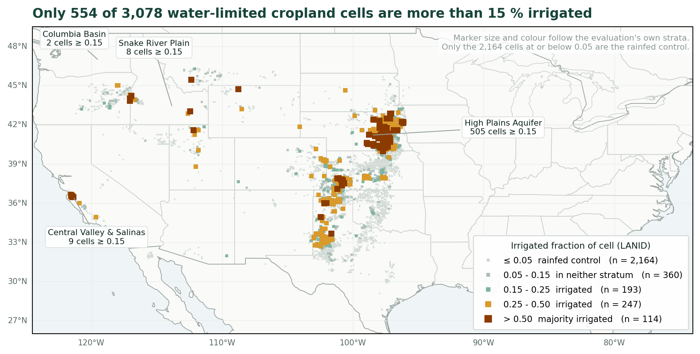
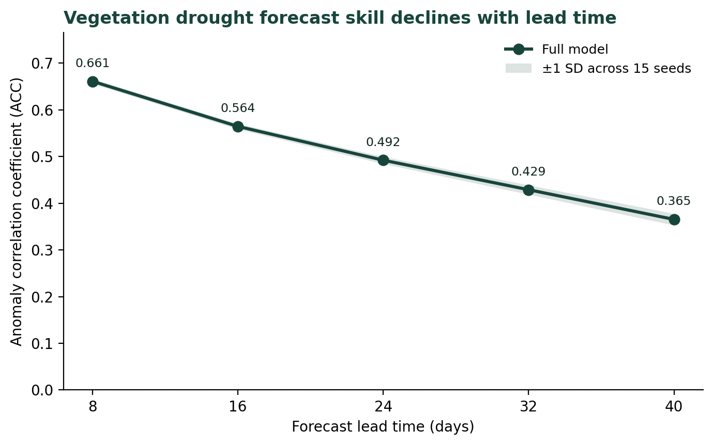
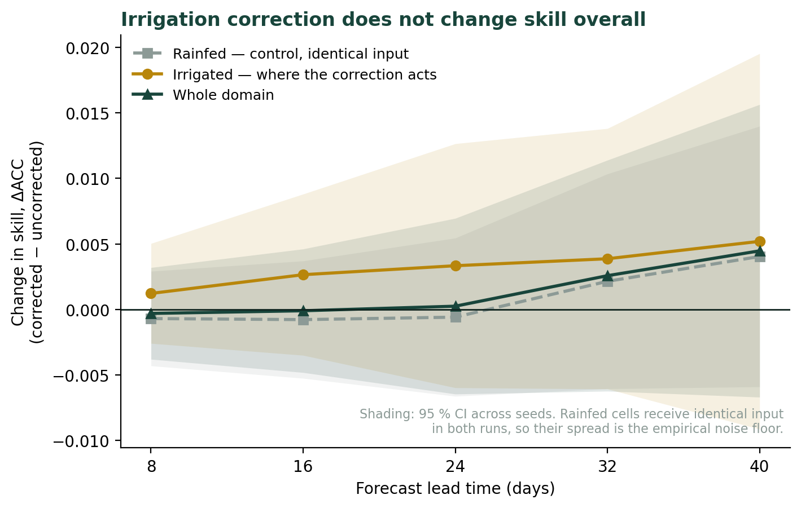
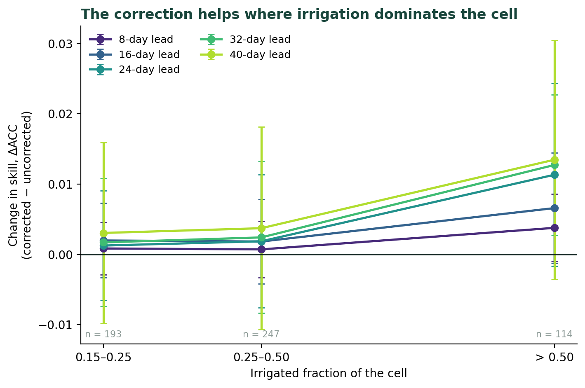

Does correcting irrigation in satellite soil moisture improve drought forecasts?
Satellite soil moisture is one of the best predictors we have for how vegetation will respond to drought weeks in advance. Water in the root zone drains slowly, so today’s soil moisture carries information about next month’s plant stress. That memory is why soil moisture appears in most sub-seasonal drought forecasting systems.
But there is a problem in farmland. Irrigation wets the soil without rain. A satellite sees moist soil and reports no drought, while the atmosphere above is bone dry. In principle a forecasting model trained on that data learns the wrong relationship: it sees soil moisture staying high through a drought and concludes that vegetation should be fine.
That reasoning is widely accepted. Le et al. (2024) forecast vegetation greenness across US croplands from SMAP soil moisture, found their forecasts performed worse in irrigated than rainfed fields, and flagged irrigation contamination as a limitation worth correcting in future work.
Nobody had tested it. So I did.
What I built
A ConvLSTM — a neural network that learns patterns across space and time at once — that forecasts vegetation drought across the water-limited croplands of the contiguous United States, 8 to 40 days ahead.

The inputs are SMAP Level-4 root-zone soil moisture, MODIS NIRv (a vegetation index tied closely to photosynthesis), irrigated fraction from the Landsat-based Irrigation Dataset, and three climate indices. The target is the NIRv anomaly — how far vegetation sits from normal for that place and time of year.
Trained on 2015–2021, validated on 2022, tested on a completely held-out 2023–2024. Anomaly correlation of 0.50 averaged across lead times, 0.66 at eight days, and a 23% reduction in error against climatology.

The experiment
To test whether the irrigation correction matters, I trained the same model twice and changed exactly one thing.
The corrected version receives soil moisture with the irrigation signal removed: for every irrigated cell, I estimate how much wetter it is than its rainfed surroundings and subtract that excess, scaled by how much of the cell is irrigated. The uncorrected version receives the raw signal. Same architecture, same splits, same random seeds, same everything else.
Because the seeds are shared, the two runs are paired. The question is not “is version A better than version B on average” but “for each seed, does correcting the input change the answer?” That pairing matters more than it might seem — with only 298 training samples, the variation between random initialisations is about the same size as the effect I was looking for.
I also scored three groups of pixels separately: irrigated cells, where the correction acts; rainfed cells, where the two versions receive identical input and any difference is pure noise; and the whole domain.
The rainfed group is the important one. It gives an empirical noise floor. If the difference on irrigated pixels is the same size as the difference on pixels that cannot possibly respond, there is nothing there.
The answer, mostly
Nothing. Across the whole domain, and across all irrigated pixels, the difference in forecast skill was indistinguishable from zero at every lead time. The rainfed control showed differences of the same magnitude — which is what you would expect if you are measuring noise.

The reason turns out to be scale. The correction is small: on average it shifts soil moisture by 0.036 standard deviations, and on 52% of irrigated pixel-timesteps it does nothing at all. At 9 km resolution, a cell that is 25% irrigated is still 75% rainfed by area. The irrigation signal is real, but it is diluted by everything else in the pixel.
Except where irrigation dominates
Then I split the irrigated pixels by how irrigated they are.

In cells where more than half the area is irrigated, the correction improves skill by 0.013 anomaly correlation at 32-day lead, with a confidence interval that excludes zero. The effect grows steadily with irrigated fraction, and grows with lead time — exactly where soil moisture contributes most to the forecast in the first place.
I want to be careful here. I ran 35 statistical tests across leads and pixel groups, and one crossing the 0.05 threshold is roughly what chance would produce. No single number in that figure is decisive on its own.
What is harder to dismiss is the shape. The effect increases monotonically with irrigated fraction at every lead time. It increases with lead time within the most irrigated group. It is positive everywhere on irrigated pixels and flat on the control pixels that cannot respond. That coherence was predicted in advance by the dilution explanation, not discovered by staring at the table afterwards.
So the honest summary: the correction does not change forecasts at 9 km across a mixed landscape, and it probably does help where irrigation dominates the pixel. Both halves matter.
What I would tell someone repeating this
Five random seeds were not enough. I first ran this with five and got two conclusions that fifteen seeds overturned. The dose-response signal was there but too noisy to trust, and a stability difference between the two models that looked convincing at five seeds evaporated at fifteen — the confidence interval on the variance ratio went from apparently meaningful to spanning 1.0. Ten more runs changed the conclusion.
The control group did more work than the statistics. Scoring rainfed pixels, where both models receive byte-identical input, gave a noise floor that needed no distributional assumptions. Comparing the irrigated result against that is more convincing than any p-value, and it is what let me distinguish “no effect” from “an effect hidden by wide error bars.”
Design the test so it can refute your own explanation. I split by irrigated fraction specifically because dilution predicts an increasing gradient. A flat response would have told me the correction simply does not matter at any intensity. Building in a way to be wrong is uncomfortable, and it is the only reason the positive finding means anything.
A null is a result if you quantify it. “We found no effect” is not very useful. “We can rule out effects larger than 0.004–0.014 anomaly correlation” is something the next person can build on.
Where this goes
The obvious next step is finer resolution. Cai et al. (2026) recently produced 100 m root-zone soil moisture over US cropland, fine enough to resolve individual centre-pivot circles. If dilution is the explanation, the correction should matter there. If it still does not, dilution was the wrong story.
There is also a loose thread. Forecasts remain worse in irrigated cropland even after correcting the soil moisture — the gap that motivated this in the first place does not close. That suggests the problem is not contaminated soil moisture at all, but that vegetation in irrigated fields is partly decoupled from weather. A farmer’s decision to irrigate is not something any soil moisture predictor can anticipate.
Carried out at Michigan State University. Code and processing pipeline: [shared on request.